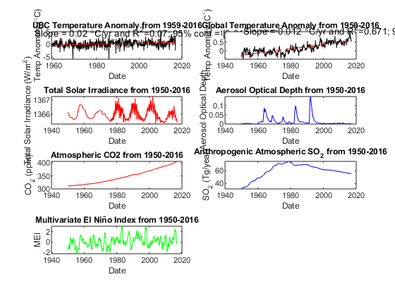
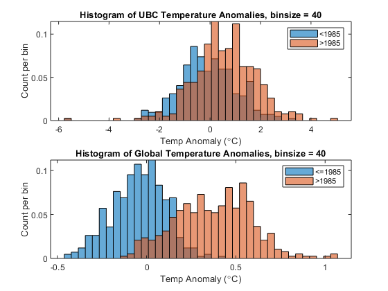
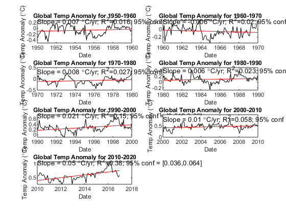
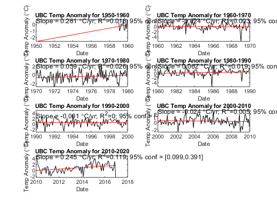
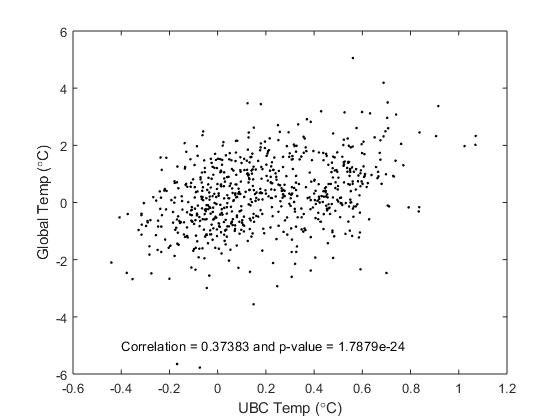

Contents
clear
close all
clc
[data txt raw] = xlsread('lab3_data.xlsx');
date = data(:,1);
ubctanom = data(:,2);
gtanom = data(:,3);
TSI = data(:,4);
AOD = data(:,5);
CO2 = data(:,6);
SO2 = data(:,7);
MEI = data(:,8);
Part 1: Plot each time series and linear regression of Temp Series
figure(1)
subplot(421)
plot(date,ubctanom,'k'); hold on
xlabel('Date'); ylabel('Temp Anomaly ({\circ}C)')
title('UBC Temperature Anomaly from 1959-2016')
mubc = ~isnan(ubctanom);
[coef,bint,r,rint,stats] = ...
regress(ubctanom,[ones(size(ubctanom)) date]);
ubctanomlinfit = coef(1)+coef(2).*date;
ubctanomlinfitbotlim = coef(1)+bint(2,1).*date;
ubctanomlinfittoplim = coef(1)+bint(2,2).*date;
plot(date(mubc),ubctanomlinfit(mubc),'r'); hold on
text(1951,5,['Slope = ',num2str(round(coef(2),3)),...
' {\circ}C/yr and R^2=',num2str(round(stats(1),3))...
'; 95% conf = [' num2str(round(bint(2,1),3)) ','...
num2str(round(bint(2,2),3)) ']'])
subplot(422)
plot(date,gtanom,'k'); hold on
xlabel('Date'); ylabel('Temp Anomaly (C^{\circ})')
title('Global Temperature Anomaly from 1950-2016')
mgt = ~isnan(gtanom);
clear bint
[coef,bint,r,rint,stats] = ...
regress(gtanom,[ones(size(gtanom)),date]);
gtanomlinfit = coef(1)+coef(2).*date;
gtanomlinfitbotlim = coef(1)+bint(2,1).*date;
gtanomlinfittoplim = coef(1)+bint(2,2).*date;
plot(date,gtanomlinfit,'r--'); hold on
text(1951,1.2,['Slope = ',num2str(round(coef(2),3)),...
' {\circ}C/yr and R^2=',num2str(round(stats(1),3))...
'; 95% conf = [' num2str(round(bint(2,1),3)) ','...
num2str(round(bint(2,2),3)) ']'])
subplot(423)
plot(date,TSI,'r'); xlabel('Date');
ylabel('Total Solar Irradiance (W/m^2)')
title('Total Solar Irradiance from 1950-2016')
subplot(424)
plot(date,AOD,'b'); xlabel('Date');
ylabel('Aerosol Optical Depth')
title('Aerosol Optical Depth from 1950-2016')
subplot(425)
plot(date,CO2,'r'); xlabel('Date');
ylabel('CO_2 (ppm)')
title('Atmospheric CO2 from 1950-2016')
subplot(426)
plot(date,SO2,'b'); xlabel('Date');
ylabel('SO_2 (Tg/year)')
title('Anthropogenic Atmospheric SO_2 from 1950-2016')
subplot(427)
plot(date,MEI,'g'); xlabel('Date');
ylabel('MEI')
title('Multivariate El Niño Index from 1950-2016')
m1 = date <= 1985;
m2 = date > 1985;
numbins = 40;
figure(2)
subplot(211)
histogram(ubctanom(m1),linspace(min(ubctanom),max(ubctanom),numbins),...
'normalization','probability'); hold on
xlabel('Temp Anomaly ({\circ}C)'); ylabel('Count per bin')
title(['Histogram of UBC Temperature Anomalies, binsize = ',...
num2str(numbins)])
histogram(ubctanom(m2),linspace(min(ubctanom),max(ubctanom),numbins),...
'normalization','probability');
legend('<1985','>1985')
subplot(212)
histogram(gtanom(m1),linspace(min(gtanom),max(gtanom),numbins),...
'normalization','probability'); hold on
xlabel('Temp Anomaly ({\circ}C)'); ylabel('Count per bin')
title(['Histogram of Global Temperature Anomalies, binsize = ',...
num2str(numbins)])
histogram(gtanom(m2),linspace(min(gtanom),max(gtanom),numbins),...
'normalization','probability');
legend('<=1985','>1985')
 
Part 2: Decadal Timescale Trends
Table1Global=zeros(7,5);
figure(3)
n = 1;
for i = 1960:10:2020
subplot(4,2,n)
m = date>=i-10 & date<i;
[coef,bint,r,rint,stats] = ...
regress(gtanom(m),[ones(size(gtanom(m))),date(m)]);
gtanomlinfit = coef(1)+coef(2).*date(m);
plot(date(m),gtanom(m),'k-'); hold on
plot(date(m),gtanomlinfit,'r-'); hold on
text(i-10,max(gtanom(m)),['Slope = ',num2str(round(coef(2),3)),...
' {\circ}C/yr; R^2=',num2str(round(stats(1),3))...
'; 95% conf = [' num2str(round(bint(2,1),3)) ','...
num2str(round(bint(2,2),3)) ']'])
xlabel('Date'); ylabel('Temp Anomaly ({\circ}C)')
title(['Global Temp Anomaly for ' num2str(i-10) '-' num2str(i)])
Table1Global(n,1)=i-10;
Table1Global(n,2)=coef(2);
Table1Global(n,3)=stats(1);
Table1Global(n,4)=bint(2,1);
Table1Global(n,5)=bint(2,2);
n = n+1;
end
Table1UBC=zeros(7,5);
figure(4)
n = 1;
for i = 1960:10:2020
subplot(4,2,n)
m = date>=i-10 & date<i;
[coef,bint,r,rint,stats] = ...
regress(ubctanom(m),[ones(size(ubctanom(m))),date(m)]);
ubctanomlinfit = coef(1)+coef(2).*date(m);
plot(date(m),ubctanom(m),'k-'); hold on
plot(date(m),ubctanomlinfit,'r-'); hold on
text(i-10,max(ubctanom(m)),['Slope = ',num2str(round(coef(2),3)),...
' {\circ}C/yr; R^2=',num2str(round(stats(1),3))...
'; 95% conf = [' num2str(round(bint(2,1),3)) ','...
num2str(round(bint(2,2),3)) ']'])
xlabel('Date'); ylabel('Temp Anomaly ({\circ}C)')
title(['UBC Temp Anomaly for ' num2str(i-10) '-' num2str(i)])
Table1UBC(n,1)=i-10;
Table1UBC(n,2)=coef(2);
Table1UBC(n,3)=stats(1);
Table1UBC(n,4)=bint(2,1);
Table1UBC(n,5)=bint(2,2);
n = n+1;
end
 
Part 3: Local vs. Global Temp
figure(5)
plot(gtanom,ubctanom,'k.'); hold on
xlabel('UBC Temp ({\circ}C)'); ylabel('Global Temp ({\circ}C)')
m = isnan(ubctanom) | isnan(gtanom);
[R,p] = corrcoef(ubctanom(~m),gtanom(~m));
[coef,bint,r,rint,stats] = regress(ubctanom(~m),[ones(size(gtanom(~m))) gtanom(~m)]);
R1 = stats(1)^2; p1 = stats(3);
text(-0.4,-5,['Correlation = ' num2str(R(2,1)) ' and p-value = ' num2str(p(2,1))]);

Part 4: Impact of specific forcingon global temperature anomaly
AllForcingsMatrix=[TSI,AOD,CO2,SO2,MEI];
Table2SimpleLinear = zeros(5,4);
n = 1;
for forcing = AllForcingsMatrix
m = isnan(forcing) | isnan(gtanom);
[coef,bint,r,rint,stats] = regress(gtanom(~m),[ones(size(forcing(~m))) forcing(~m)]);
Table2SimpleLinear(n,1)= coef(2);
Table2SimpleLinear(n,2)=stats(1);
Table2SimpleLinear(n,3)=bint(2,1);
Table2SimpleLinear(n,4)=bint(2,2);
n=n+1;
end